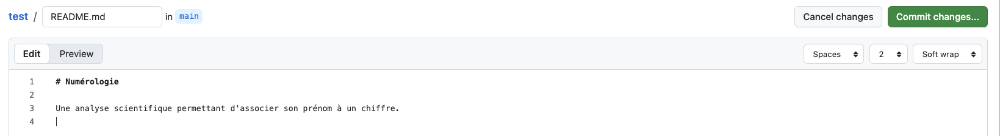
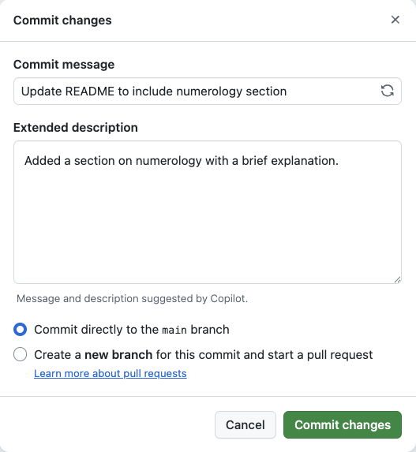
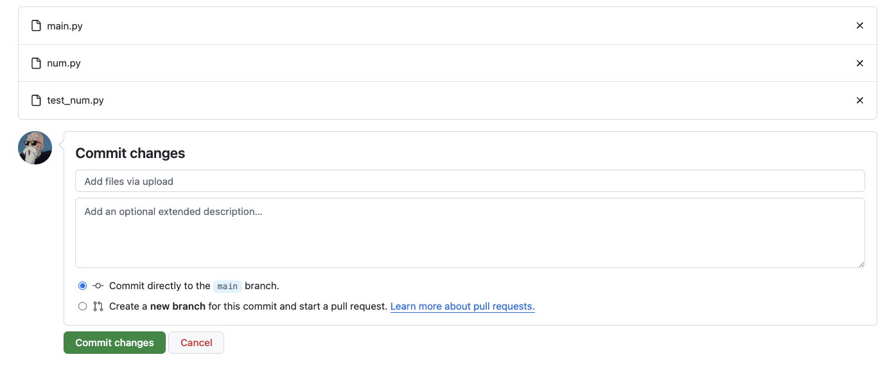
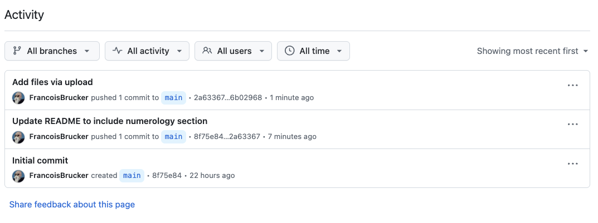
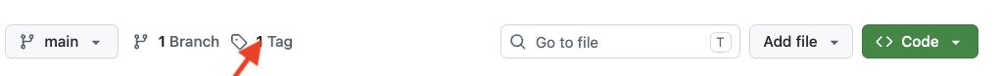
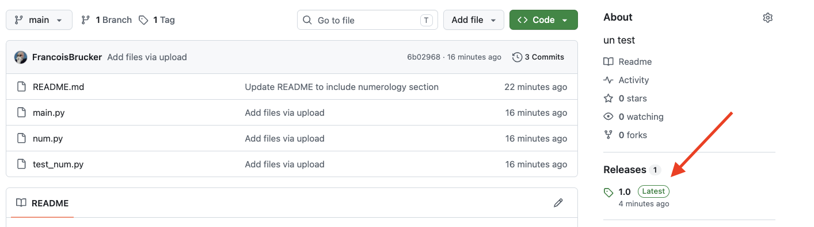
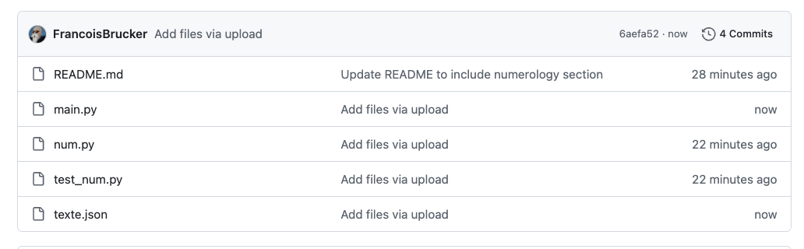
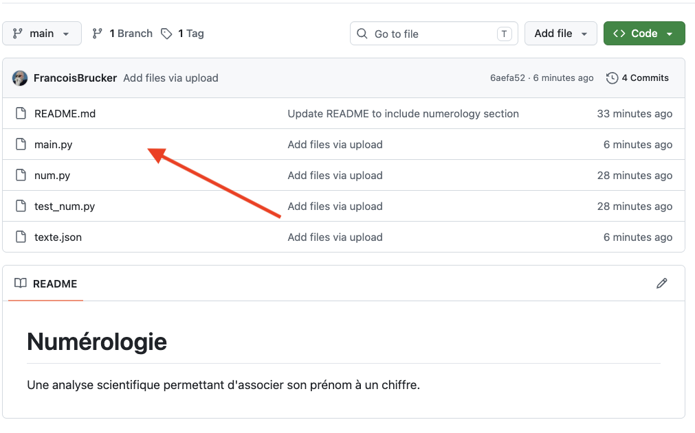
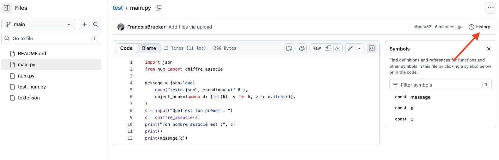
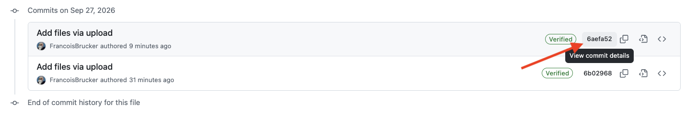

Projet : distribuer du code
Nous allons créer un projet sous github pour que le monde entier puisse l'utiliser s'il le désire.
L'aide de github est très bien faite (la traduction en français est cependant automatique, donc souvent approximative), n'hésitez pas à y jeter un coup d'œil.
Le code
Pour se fixer les idées utilisons ce projet :
- Téléchargez le dossier suivant contenant un projet python de 3 fichiers : le projet Numérologie
- Créez un projet vscode avec ces différents fichiers et exécutez le fichier
main.py
Une fois le fichier main.py exécuté, remarquez qu'un dossier __pycache__ a été créé. Il correspond à l'import du module num par le programme principal.
Créer un projet


Résultat : 
Félicitation vous avez fait votre premier commit !
Chaque commit est associé à une branche (ici main) et est obligatoirement constitué de :
- du nom de la personne qui a effectué le commit, ici
Test-cours-ecm - du numéro du commit, ici
da919d7(donné automatiquement). - d'un message (d'une ligne) décrivant le commit, ici
initial commit
Fichier readme.md
Le fichier n'est cependant pas celui qu'on veut :
Éditez le fichier README.md :

Puis cliquez sur le gros bouton vert commit changes pour voir apparaître cette fenêtre :

Puis cliquez sur commit changes.
Un deuxième commit !
Upload des fichiers
Il nous reste à mettre les fichiers sur le dépôt :
Sur la page de votre projet, à gauche du bouton vert code, il y a un menu déroulant add file. Cliquez dessus et uploadez les 3 fichiers pythons :

Puis commitez vos ajouts.
Il e faut pas uploader le dossier __pycache__ qui est créé à l'exécution :
On ne met sur github que les fichiers sources de votre projet, pas les fichiers générés.
Sur la page de votre projet, sur la droite, vous voyez un lien activity. En cliquant dessus vous voyez les différents commits effectués :

Tag
En cliquant sur le lien tag sur la fenêtre :

On vous proposera de créer une nouvelle release.
- commencez par créer un nouveau tag que vous nommerez
release - donnez un titre à notre release, par exemple
1.0 - commitez votre release !
Ceci a créé une release, notre 1.0. Pour la voir, cliquez sur le lien release :

V2
Après quelque temps de travail, on est arrivé à une nouvelle version publiable :
- Téléchargez le dossier suivant contenant un projet python de 3 fichiers : le projet Numérologie
- Créez un projet vscode avec ces différents fichiers et exécutez le fichier
main.py
Il nous faut mettre à jour le projet sur github :
Ulpoadez les fichiers de la v2.
La fenêtre principale de votre projet doit ressembler à quelque chose du type :

Vous remarquerez que :
- on a maintenant 4 commit
- que le fichier
teste.jsona été ajouté - que le fichier
main.pya été modifié - que les deux autres fichiers (
num.pyettest_num.py) n'ont pas changé entre les deux versions.
Voyons ce qui a changé dans le fichier main.py :
Cliquez sur le lien main.py depuis la fenêtre principale du projet :

Vous devriez voir le fichier main.py que vous avez uploadé.
Cliquez sur le lien history :

Vous devriez voir les différents commits où ce fichier a été modifié.
Cliquez sur le numéro du dernier commit :

Voir ce doc pour voir comment git associe chaque commit à un sha pour le retrouver.
Vous devriez voir un "diff" entre la v1 et la v2 pour le commit :
- en rouge ce qui a disparu
- en vert ce qui a été ajouté
Et ce pour chaque fichier mis à jour pour ce commit.
On termine en faisant une seconde release :
Faite la release v2 du projet. Vous utiliserez le même tag que pour la v1, seul le titre (ici c'est la v2) doit changer.